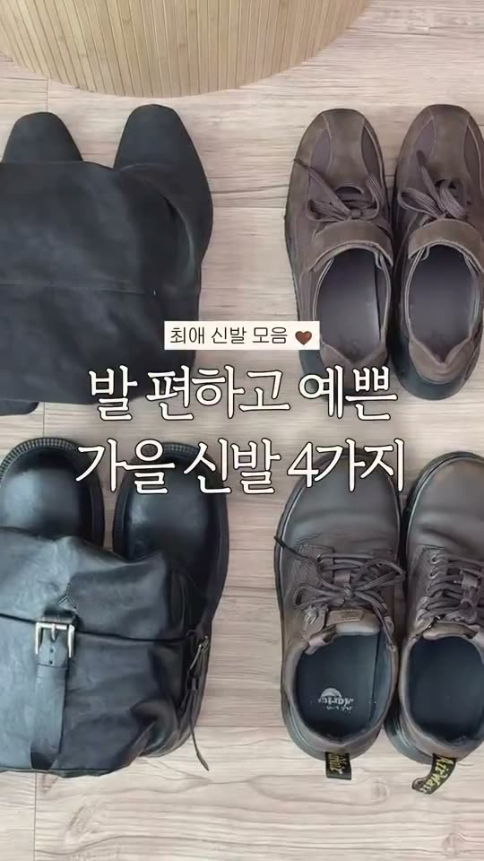
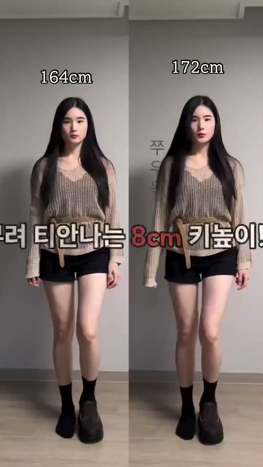
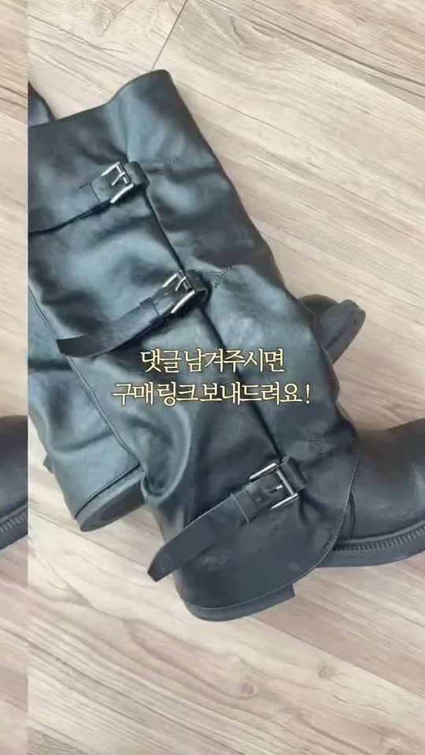
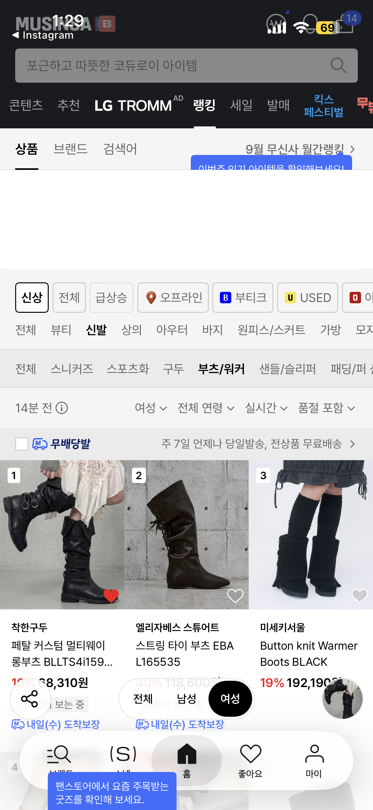

1 · 첫 0~3초큰 타이틀 + 점프컷
같은 자리에서 양말과 풀문을 0.5초씩 번갈아 붙이고 큰 타이틀을 얹어요. 첫 나레이션 한 문장으로 무엇을 신어보는지 알려요.
자막·나레이션
“착한구두 겨울 키높이템 신어보기”
아무님 전용 · EDIT 키높이 촬영 가이드 · 협의용 초안
필수 컷 확보 → 예시 선택 → 촬영안 합의 → 촬영·검수
아무님 · 핵심 키워드: 티 안 나게 키 커진다
아무님 광고 영상 중 공유·저장 반응이 가장 좋았던 ‘○○ 입어보기’ 리뷰 폼 그대로 찍어요. 큰 타이틀 점프컷으로 열고, 한 문장씩 나레이션을 붙여 가며 거울 전신 ↔ 무릎 아래 ↔ 손 디테일을 오가요. 이번엔 풀문 키높이 방한 부츠 신어보기예요.
아래 부츠 핑크 색상 235 사이즈로 보내 드렸어요. 자막의 높이는 아래 공식 표기를 사용해 주세요. 팔로워 할인코드는 추후 안내드려요.
사진을 누르면 공식 상품 상세로 이동해요. 모바일에서는 옆으로 넘겨 볼 수 있어요.
제품은 위 풀문 부츠 핑크 235 한 켤레로 확정했어요. 업로드는 11월 4주차예요. 키 수치는 양말·풀문 각각 직접 잰 값으로 써요. 미측정이면 “굽 7cm”로만 안내해요.
아무님 광고 영상 중 공유·저장이 가장 많았던 ‘○○ 입어보기’ 영상의 흐름을 그대로 써요. 원본: 입어보기 리뷰 ↗ · 신발 장면: 가을 신발 모음 ↗
사진은 촬영 구도 예시예요. 이번 부츠로 같은 구도를 찍어요.

1 · 첫 0~3초같은 자리에서 양말과 풀문을 0.5초씩 번갈아 붙이고 큰 타이틀을 얹어요. 첫 나레이션 한 문장으로 무엇을 신어보는지 알려요.
자막·나레이션
“착한구두 겨울 키높이템 신어보기”

2 · 중간같은 자리·같은 카메라로 양말, 풀문을 한 번씩 찍어 좌우로 붙여요. 이어서 손 디테일과 무릎 아래 착화를 한 문장씩 이어요.
자막·나레이션
“부츠 여러 개 신어봤는데 키는 풀문이 1등이었음” · 양말·풀문 각각 잰 키

3 · 마지막할인코드 안내 캡처를 얹고 한 문장으로 챙기라고 말한 뒤, 댓글 안내로 닫아요.
자막·나레이션
“구매하기 전에 할인코드 꼭 챙기세요” · 제품명 · 할인코드(추후 안내) · 댓글 아무거나
첫 장면과 구매 안내는 앞·끝에 두고, 중간 순서와 장면은 함께 정해요. 아래 조합은 출발안이며 합의 전 확정안은 아니에요. 조회수는 원본 전체 영상의 수치로, 개별 컷의 전환 효과를 뜻하지 않아요. 예시 속 제품·숫자·가격은 이번 조건으로 바꿔요.
키 차이는 같은 자리 좌우 비교로 꼭 보여줘요. A-8
아무님 신발 영상의 첫 장면이에요.
첫 3초만 참고해요. 어떤 걸로 열어도 바로 키 비교로 이어가요.
‘부츠 여러 개 신어봤는데 키는 풀문이 1등이었음’ 한 문장과 함께, 같은 자리 거울 전신을 양말·풀문으로 한 번씩 찍어 좌우로 붙여요.
랭킹 캡처 활용 요청
아래 랭킹 캡처를 브랜드 소개 장면에 넣어 주세요. “무신사 1위 부츠를 만든 착한구두에서, 저는 이 부츠를 골랐어요.”처럼 자연스럽게 이어 주시면 좋겠어요. 삽입 위치와 길이는 자유롭게 정해 주세요.
플랫폼명·카테고리·1위 표시·착한구두 상품명이 함께 보이도록 잘라 주세요. 무신사 캡처는 페탈 부츠의 부츠/워커 상품 순위, 지그재그 캡처는 착한구두 스니커즈의 상품 순위예요. 브랜드 순위가 아니라 착한구두의 상품 1위 이력으로 보여 주세요.

각 캡처에 표시된 시점·카테고리의 순위예요.
‘실물로 보니까 ~’ 한 문장을 붙이고 손으로 짚는 클로즈업을 한 컷씩 이어요. 예: 안쪽 퍼 안감 → 굽 7cm → 스웨이드 결.
손을 넣어 퍼 안감을 눌러 보이고, 신은 발을 내려다보거나 무릎 아래로 걸으며 포근함과 편안함을 한 문장으로 붙여요.
화면 위쪽에 작은 제품명 라벨을 고정하고, 거울 전신과 무릎 아래 하체를 1.5~2초마다 번갈아 붙여요. 컷마다 나레이션 한 문장이에요.
광고로 썼을 때 반응이 가장 좋았던 구도예요. 영상 중간이나 끝에 2~3초만 넣어 주시고, 이 컷은 자막·음악 없는 원본으로도 따로 보내 주세요. 둘 중 하나면 충분해요. 아래 영상은 다른 제품으로 찍은 광고 장면이라 구도만 참고해 주세요.
이번 영상에서 어떤 장면에 반응이 좋았는지 함께 살펴보고, 다음 협업에서는 더 좋은 영상을 만들어가고 싶어요. 업로드 후 시청 지표를 인사이트 화면 캡처로 공유해 주시면 큰 도움이 됩니다.
함께 살펴볼 지표
시청 유지 그래프 · 평균 시청 시간 · 완료율 · 유입 경로